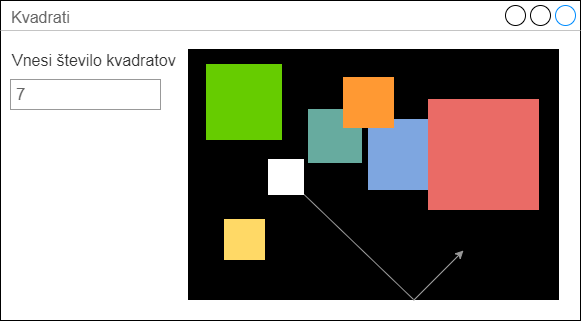

Licenca
To delo je na voljo pod pogoji slovenske licence Creative Commons 2.5:
priznanje avtorstva - nekomercialno - deljenje pod enakimi pogoji.
Celotna licenca je na voljo na spletu na naslovu http://creativecommons.org/licenses/by-nc-sa/2.5/si/. V skladu s to licenco je dovoljeno vsakemu uporabniku delo razmnoževati, distribuirati, javno priobčevati, dajati v najem in tudi predelovati, vendar samo v nekomercialne namene in ob pogoju, da navede avtorja oziroma avtorje in izdajatelja tega dela. Če uporabnik delo predela, kar pomeni, da ga spremeni, preoblikuje, prevede ali uporabi to delo v svojem delu, lahko predelavo dela ponudi na voljo le pod pogoji, ki so enaki pogojem iz te licence oziroma pod enako licenco.

Naloge
4
Program, ki animira 100 žogic spremeni tako, da bo namesto žogic animiral kvadrate. Izgled GUI vmesnika programa naj bo podoben modelu v naslednji nalogi, vendar brez vnosnega polja.
5
Program iz prejšnje naloge spremeni tako, da dodaš vnosno polje, v katerega lahko uporabnik vnese število kvadratov, ki jih bo program animiral.
Izgled GUI vmesnika programa naj bo podoben spodnjemu modelu.
